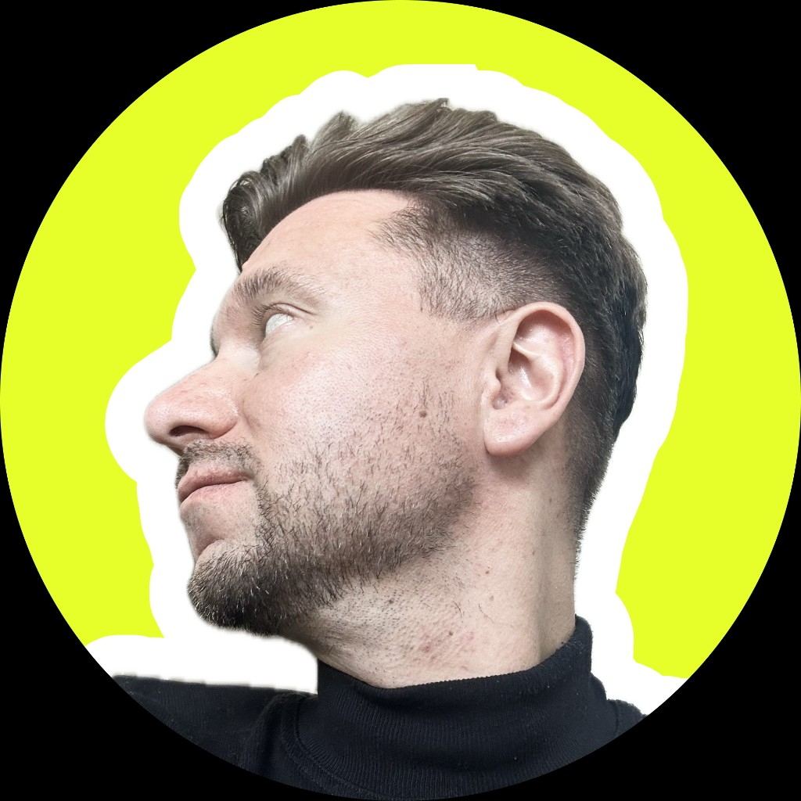

Сергей Кламбоцкий
Исследую себя, человеков и технологии через творчество, дизайн, движение и рефлексию.
Маркетолог, креатор, философ.

Исследую себя, человеков и технологии через творчество, дизайн, движение и рефлексию.
Маркетолог, креатор, философ.